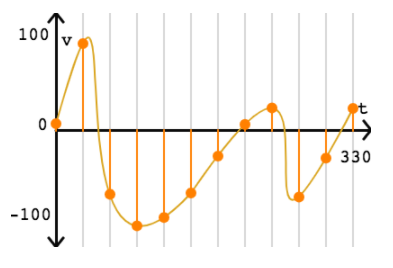

Sound is recorded by a microphone as an analogue signal.
Analogue signals are pieces of continually changing data which are difficult to store on computers.
Analogue signals are then converted into digital data so that a computer can read and store these sound files.
The process of converting analogue to digital data is called sampling.
Sampling

The orange line on the graph represents a continous piece of data that is constantly changing.
To convert this recording to digital, we sample the amplitude of the wave at regular intervals (shown by the orange dots on the graph line).
Once the device has sampled the recording it creates a digital cure like the one above.
The digital data is about the same shape as the analogue wave but is not continuous because it has lost a lot of data.
the digital data can be improved by taking more samples more regularly.
Sample Rate and Sample Resolution
Sample Rate:
Also known as sampling frequency.
This is how many samples you take in a second - rate.
It is usually measured in Hertz or Kilohertz.
Sample Resolution:
Sample resolution is the number of bits available for each sample.
File Size
File Size is calculated using the formula:
File Size = Sample Rate X Sample Resolution X Length of time
Increasing the sample rate means the analogue recording will sampled more often so the quality of the digital sound will increase.
Increasing the sample resolution means the digital file will pick up quieter sounds resulting in a sound that is close to the quality of the original recording.
However, increasing both the sample rate and sample resolution will increase the file size.